Curso:
1. Primeros pasos |
2. Modelar con Java |
3. Pruebas automáticas |
4. Herencia |
5.
Lógica de negocio básica |
6.
Validación avanzada |
7.
Refinar el comportamiento predefinido |
8.
Comportamiento y lógica de negocio |
9.
Referencias y colecciones |
A.
Arquitectura y filosofía |
B.
Java Persistence API |
C.
Anotaciones
Lección 1: Primeros
pasos
Esta lección es la génesis de tu primera aplicación. Después de una breve
revisión de la aplicación que queremos desarrollar, configuraremos todas
las herramientas que necesitas para desarrollar con OpenXava.
Vas a instalar Eclipse; configurar el Tomcat dentro del Eclipse y crear el
proyecto para tu aplicación.
Esta lección es una introducción a OpenXava y Eclipse, por tanto está un
poco sobre explicada, especialmente en lo que a Eclipse se refiere. Por
eso, si ya eres un usuario de Eclipse experimentado, simplemente echa un
vistazo rápido a la lección y pasa directamente a la siguiente.
Nuestro
objetivo: Una pequeña aplicación de facturación
La aplicación para esta parte del libro es una pequeña aplicación de
facturación con facturas, clientes, productos y así por el estilo. Esta
aplicación es una mera excusa para aprender algunos casos típicos en
aplicaciones de gestión. Puedes aplicar todo lo que aprendas con esta
aplicación a cualquier otra aplicación de gestión en cualquier otro
dominio.
Ten en cuenta que esta aplicación de facturación es una herramienta
didáctica. No la uses “tal cual” para un sistema de facturación real.
Crear
el proyecto en Eclipse
Eclipse es, sin duda, el IDE ubicuo dentro del mundo Java (junto con
NetBeans). OpenXava viene “de casa” listo para usar con Eclipse. Vas a
desarrollar tu aplicación de facturación usando Eclipse. Al final de este
capítulo tendrás una primera versión funcional de tu aplicación
desarrollada como un proyecto de Eclipse.
Este curso asume que estás usando la edición “Eclipse IDE for Java EE
Developers” de Eclipse con Java 11 o Java 8. La última versión de Eclipse
es perfecta, aunque también puedes usar Eclipses más antiguos, hasta Neon
(4.6). Si es necesario, obtén tu Eclipse de
www.eclipse.org y Java de
www.oracle.com.
Instalar
OpenXava
Ve a
www.openxava.org
y descarga la última distribución de OpenXava. Es un archivo zip, algo así
como
openxava-6.x.zip. Simplemente descomprímelo y tendrás un
entorno listo para empezar a desarrollar. Algo como esto:
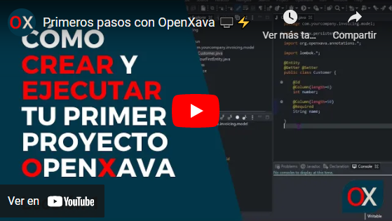
Como ves, las distribución de OpenXava incluye un Tomcat y un workspace de
Eclipse, todo configurado y listo para usar. Empecemos a trabajar.
Crear
el proyecto
Arranca tu Eclipse y abre el workspace de
OpenXava con él (File >
Switch Workspace):

En primer lugar has de crear un proyecto Java nuevo:
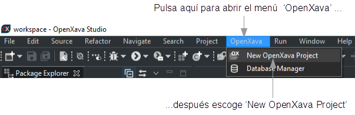
Entonces aparecerá un asistente. Teclea el nombre del proyecto,
Facturacion
y presiona en Finish:
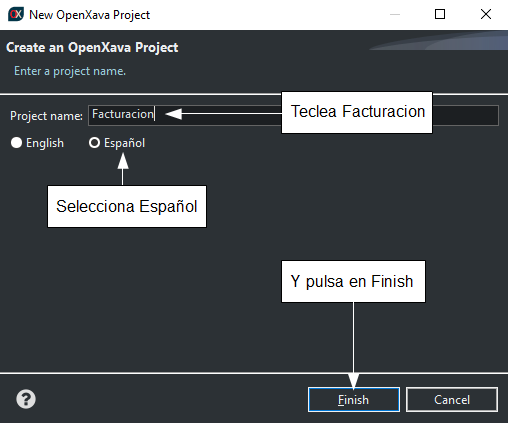
Ten cuidado de poner la
F de
Facturacion en mayúscula
y no usar acento, para que los vínculos de abajo funcionen correctamente.
Si estás usando Java 9 o superior
con una versión reciente de Eclipse, te preguntará:
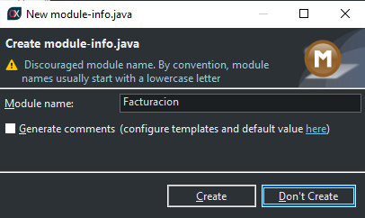
Después de esto tendrás un
proyecto Java vacío llamado
Facturacion:
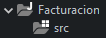
Ahora tienes que convertirlo en un proyecto OpenXava:
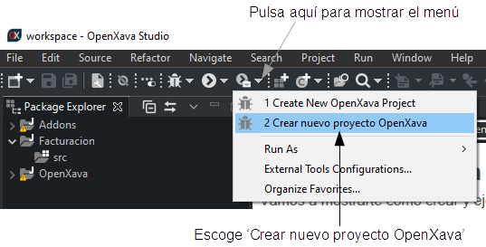
Después de esto has de introducir el nombre de proyecto, teclea
Facturacion
y presiona OK:
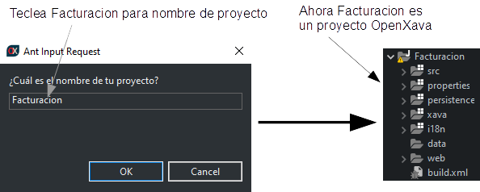
Espera unos pocos segundos hasta que termine y tendrás un proyecto
OpenXava completo:
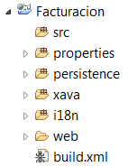
Tu proyecto ya está listo para empezar a escribir código, sin embargo
antes de eso vamos a configurar el Tomcat dentro de Eclipse para usarlo
como plataforma para ejecutar tu aplicación.
Configurar
Tomcat dentro de Eclipse
Arrancar el Tomcat dentro del Eclipse tiene varias ventajas, como que
puedes depurar, ver la bitácora con los mensajes y las trazas de error
dentro de Eclipse, ir desde una traza al código pulsando con el ratón,
etc.
En la parte inferior del Eclipse selecciona la pestaña
Servers y
pulsa el vínculo que hay dentro para crear un
nuevo servidor:
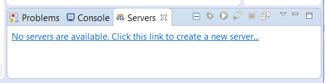
Se mostrará un diálogo, selecciona
Apache Tomcat v9.0 (dentro de
la carpeta
Apache) y presiona
Next:
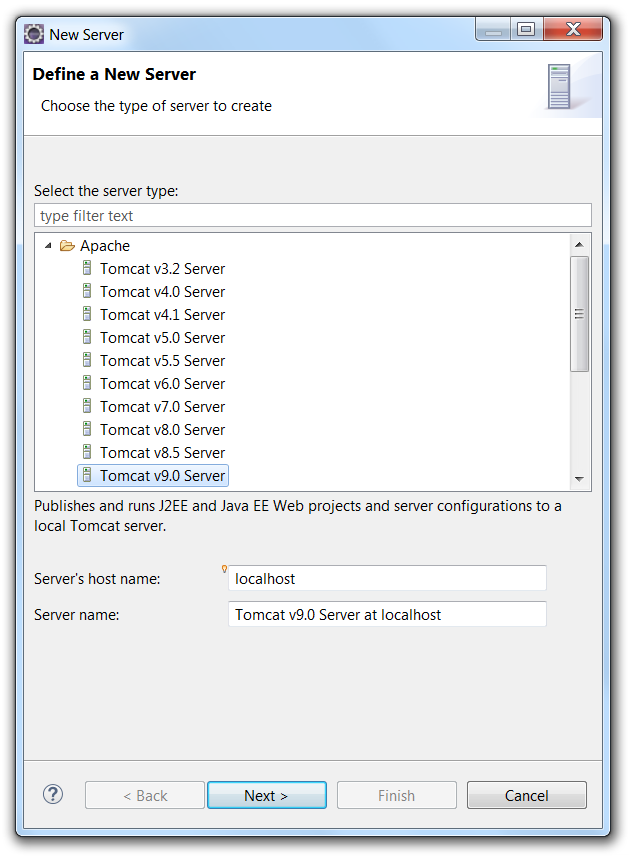
Escoge el Tomcat incluido con OpenXava como directorio de instalación y
pulsa
Next.
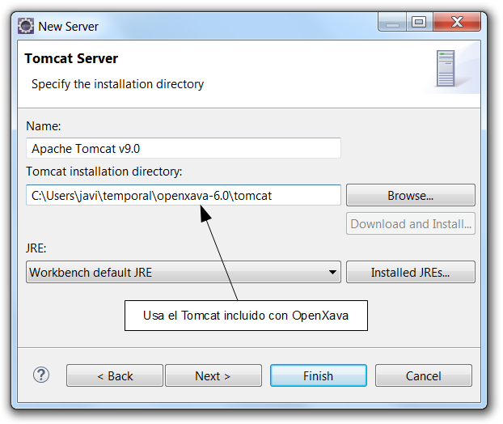
Para finalizar, añade tu aplicación al Tomcat y pulsa
Finish:
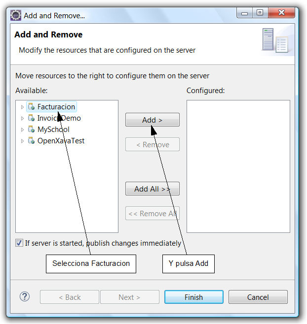
Ahora el Tomcat está listo para usar.
Preparar
la base de datos
Tu aplicación OpenXava puede ir contra cualquier base de datos relacional,
como MySQL, PostgreSQL, Oracle, DB2, MS SQL Server y muchísimas más.
Además, puedes cambiar de una base datos a otra sin tocar una sola línea
de código. Para este curso vamos a utilizar HSQLDB, porque ya está
incluida en OpenXava y es extremadamente fácil de configurar. Puedes
cambiar a tu base de datos de producción en cualquier momento.
Crear
la fuente de datos
Una fuente de datos es el medio que usa un servidor de aplicaciones para
saber como conectarse a una base de datos. Desde nuestras aplicaciones
solo referenciamos a fuentes de datos (y no directamente a las bases de
datos), por tanto hemos de configurar las fuentes de datos en el Tomcat
para apuntar a las bases de datos correctas. Definamos la fuente de datos
para nuestra aplicación
Facturacion.
Ve al proyecto
Servers de Eclipse, edita el archivo
context.xml
dentro de la carpeta de tu servidor:
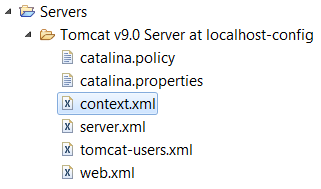
Si no ves el código XML de
context.xml pulsa en la pestaña
Source.
Ahora has de añadir una nueva fuente de datos llamada
FacturacionDS,
contra tu base de datos. Añade el siguiente código al final de
context.xml
justo antes del último
</Context>:
<Resource name="jdbc/FacturacionDS" auth="Container"
type="javax.sql.DataSource"
maxActive="20" maxIdle="5" maxWait="10000"
username="sa" password=""
driverClassName="org.hsqldb.jdbcDriver"
url="jdbc:hsqldb:hsql://localhost:1666"/>
Iniciar
la base de datos
Para arrancar tu base de datos HSQLDB con Windows pulsa el botón
Inicio,
teclea
cmd y presiona ENTER, después:
cd openxava-6.x\tomcat\bin
start-hsqldb facturacion-db 1666
Con Linux/Mac:
cd openxava-6.x/tomcat/bin
./start-hsqldb.sh facturacion-db 1666
Obtendrás la siguiente salida:
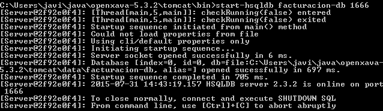
Tu base de datos ya está arrancada y si es la primera ejecución se habrá
creado automáticamente.
Crear
tu primera entidad
Al fin tienes tu entorno de desarrollo configurado. Ahora, desarrollar es
muy fácil: solo has de añadir entidades para ir haciendo crecer tu
aplicación. Creemos tu primera entidad y ejecutemos la aplicación.
Lo primero es crear un paquete para que contenga las clases del modelo
(las entidades). Con el botón derecho en
src de tu proyecto
escoge
New > Package:

En el diálogo introduce el nombre del paquete,
org.openxava.facturacion.modelo,
y pulsa
Finish:
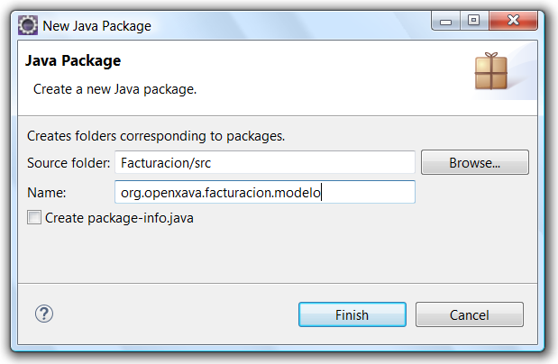
En vez de
org.openxava puedes usar el dominio de tu
organización, es decir, si trabajas para la NASA el paquete podría ser
gov.nasa.facturacion.modelo.
Ya sabes crear un paquete con Eclipse, a partir de ahora no usaremos una
figura para esto.
Ahora, puedes crear tu primera entidad. Empezaremos con una versión
simplificada de
Cliente con solo
numero y
descripcion.
Selecciona el paquete
org.openxava.facturacion.modelo y pulsa el
botón
New Java Class:
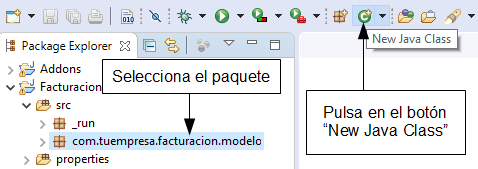
Después teclea
Cliente como nombre de clase y pulsa
Finish.
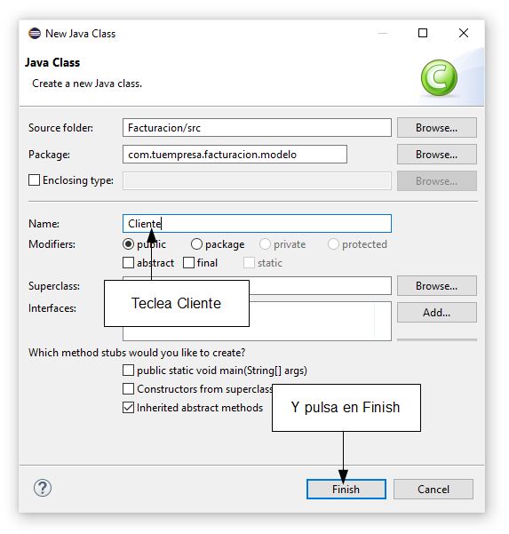
Fíjate que la
C de
Cliente está en mayúscula, esto es
muy importante, en Java todas las clases empiezan con mayúscula. Has
aprendido como crear una clase Java en Eclipse. A partir de ahora no
usaremos una figura para eso.
El código inicial que Eclipse proporciona para
Cliente es muy
simple:
package org.openxava.facturacion.modelo;
public class Cliente {
}
Ahora, te toca a ti rellenar esta clase para convertirla en una entidad
adecuada para OpenXava. Solo necesitas añadir la anotación
@Entity
y las propiedades
numero y
descripcion:
package org.openxava.facturacion.modelo;
import javax.persistence.*;
import org.openxava.annotations.*;
@Entity // Esto marca la clase Customer como una entidad
public class Cliente {
@Id // La propiedad numero es la clave. Las claves son obligatorias (required) por defecto
@Column(length=6) // La longitud de columna se usa a nivel UI y a nivel DB
private int numero;
@Column(length=50) // La longitud de columna se usa a nivel UI y a nivel DB
@Required // Se mostrará un error de validación si la propiedad nombre se deja en blanco
private String nombre;
public int getNumero() {
return numero;
}
public void setNumero(int numero) {
this.numero = numero;
}
public String getNombre() {
return nombre;
}
public void setNombre(String nombre) {
this.nombre = nombre;
}
}
Con esto tienes el código suficiente (justo una clase) para ejecutar tu
aplicación. Hagámoslo.
Ejecutar
la aplicación
Lo primero es contruir el proyecto pulsando el botón
Build All o
presionando Ctrl-B:
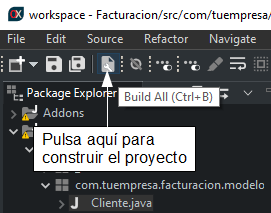
Para iniciar el servidor ve a la pestaña
Servers. Si no la ves,
posiblemente has maximizado el editor actual, simplemente haz doble click
en la pestaña del editor para minimizarla y verás la distribución original
del Eclipse de nuevo.
Una vez allí sigue las siguientes instrucciones:
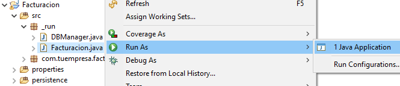
Ya tienes tu aplicación ejecutándose. Para verla, abre tu navegador y ve a
la URL:
http//:localhost:8080/Facturacion
Estás viendo tu aplicación por primera vez. Para empezar pulsa en el botón
INICIAR SESIÓN:
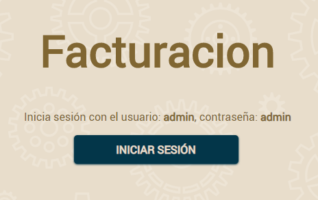
Después, pulsa en la parte de la
izquierda se mostrará una lista de módulos, escoge
Clientes:
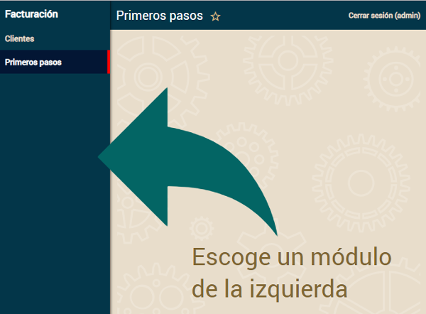
Usa el módulo
Clientes para crear nuevos clientes, simplemente
introduce el número y el nombre y pulsa
Grabar.

Pulsa en
Lista para ver los clientes que has creado.
Enhorabuena, tienes tu entorno configurado y tu aplicación funcionando.
Modificar
la aplicación
A partir de ahora, desarrollar con OpenXava es muy fácil. Simplemente,
escribes una clase y ya puedes ver el resultado en el navegador.
Probémoslo.
Crea una nueva entidad para
Producto con el siguiente código:
package org.openxava.facturacion.modelo;
import javax.persistence.*;
import org.openxava.annotations.*;
@Entity
public class Producto {
@Id @Column(length=9)
private int numero;
@Column(length=50) @Required
private String descripcion;
public int getNumero() {
return numero;
}
public void setNumero(int numero) {
this.numero = numero;
}
public String getDescripcion() {
return descripcion;
}
public void setDescripcion(String descripcion) {
this.descripcion = descripcion;
}
}
Ahora, presiona Ctrl-B. La mayoría de las veces es suficiente pulsar
Ctrl-B para desplegar automáticamente tu código, pero de vez en cuando el
Eclipse falla al desplegar y tienes que reiniciar el Tomcat, por suerte
esto solo cuesta unos pocos segundos. Por tanto, si unos segundos después
del Ctrl-B tu aplicación no se redespliega, reinicia el Tomcat con
Botón
derecho en Tomcat > Restart.
Para ver tu nueva entidad en acción abre tu navegador y ve a la URL:
http://localhost:8080/Facturacion/modules/Producto
Después de indentificarte con admin/admin obtendrás:

Sí, ya tienes un nuevo módulo en marcha, y solo has tenido que escribir
una simple clase. Ahora puedes concentrarte en hacer crecer tu aplicación.
Resumen
Después de esta lección tienes instalado Eclipse y OpenXava. Además, lo
tienes configurado todo para poder trabajar. Ahora, tienes tu entorno
listo para desarrollar tu aplicación.
También, tienes una primera versión de tu aplicación
Facturacion
funcionando.
Pero lo más importante es que has aprendido cómo crear un nuevo proyecto,
un nuevo paquete, una nueva clase, cómo actualizar el esquema de la base
de datos, cómo ejecutar un módulo OpenXava y algunas otra cosas útiles que
usarás en el resto del curso.
Ya estás listo para pasar a la siguiente lección, sin embargo deberías
considerar adquirir un poco de conocimiento base, tal como:
Descargar código fuente de esta lección
¿Problemas con la lección? Pregunta en el foro ¿Ha ido bien?
Ve a la lección 2